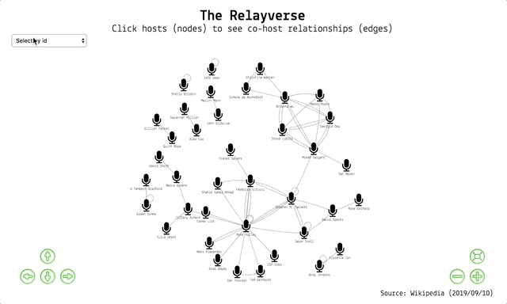
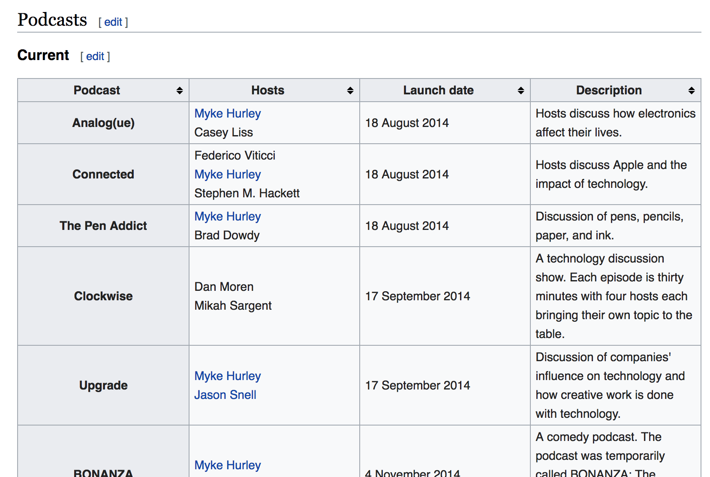
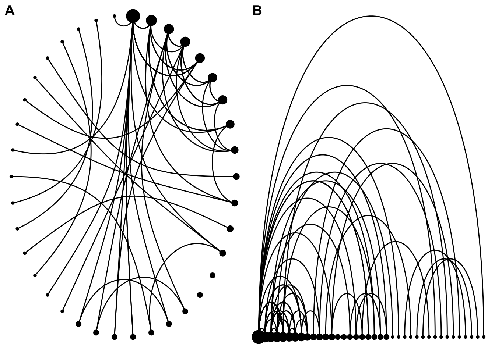
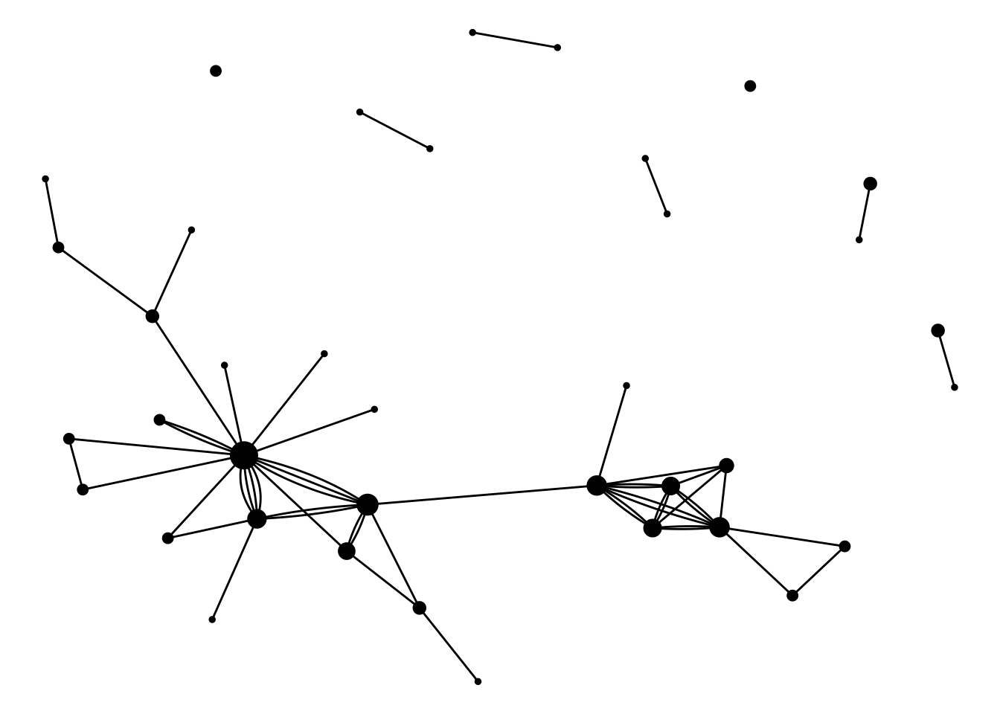

suppressPackageStartupMessages({
# Data collection and manipulation
library(dplyr) # data manipulation
library(rvest) # for scraping webpages
library(stringr) # string manipulation
library(tidyr) # tidying dataframes
library(purrr) # applying functions over data
# Graph networks
library(tidygraph) # set up graph network
library(ggraph) # visualise static graphs
library(cowplot) # for plot arrangement
library(visNetwork) # wrapper for javascript interactive viz
})
tl;dr
I made an interactive graph network of the podcast host relationships on Relay FM using R. You can interact with it in a separate window and find out below how it was made.
Podcast networks
Podcasting is becoming big business. Music-streaming giant Spotify just acquired the podcast network Gimlet for a reported $200 million.
Other networks include The Incomparable, 5by5 and Radiotopia. Such networks can boost revenue and listener numbers and provide access to expertise, management and resources.
Relay FM is a network that focuses largely on tech content1. It was started by Myke Hurley and Stephen Hackett in 2014 and you can find a list of shows and personnel on their site. Many of Relay FM’s hosts have hosted more than one podcast within the network. What do the relationships between them look like?
This post is about preparing and visualising this ‘Relayverse’ using the R packages {tidygraph}for network data handling and {ggraph} for network visualisation (both by Thomas Lin Pedersen), along with the {visNetwork} package.
Scroll to the bottom to find the interactive tool if you aren’t interested in the code.
Packages
I’m using two suites of ‘tidy’ packages in this post: one set for data collection and manipulation, and one set for graph network building, analysis and visualisation.
Harvest data
We can use the {rvest} package to scrape podcast details from the Wikipedia page for Relay FM. There are two separate tables: one for current and one for retired (discontinued) shows.

read_html() gets the HTML for the selected page; html_node() identifies which element needs to be scraped2; and html_table() interprets the HTML information as a data frame. I’ve removed the show ‘B-Sides’ because it’s clips from other shows.
# Get the HTML for the selected page
relay_wiki <- read_html("https://en.wikipedia.org/wiki/Relay_FM")
# Get the table with current shows
current <- relay_wiki %>%
html_node(xpath = '//*[@id="mw-content-text"]/div/table[2]') %>%
html_table() %>%
filter(
!Podcast %in% c("Members Only", 'Paid "Members Only" Shows', "B-Sides")
) %>%
mutate(Status = "Current") # label rows as current shows
# Get the table with retired shows
retired <- relay_wiki %>%
html_node(xpath = '//*[@id="mw-content-text"]/div/table[3]') %>%
html_table() %>%
select(-`Number of episodes`) %>%
mutate(Status = "Retired") # label rows as retired shows
# Combine the tables into one dataframe
shows <- bind_rows(current, retired)
# Look at a few random hosts/podcasts from the table
select(shows, Podcast, Hosts) %>%
sample_n(5) %>% knitr::kable()| Podcast | Hosts |
|---|---|
| Virtual | Federico ViticciMyke Hurley |
| Free Agents | Jason SnellDavid Sparks |
| Bionic | Myke HurleyMatt Alexander |
| Less Than or Equal | Aleen Simms |
| Canvas | Federico ViticciFraser Spiers |
Unfortunately the host names are in the form ‘First LastFirst Last’ so we need a regular expression to split the string where a lowercase letter meets an uppercase letter3. This leaves us with a list column that we can unnest() to get one row per podcast-host combination.
# Clean the host names
shows_clean <- shows %>%
mutate(
Hosts = str_remove_all(Hosts, "formerly hosted by.*$"), # remove text and former hosts
Hosts = str_remove_all(Hosts, " \\(originally\\)"), # remove '(originally)' text
Hosts = str_remove_all(Hosts, "\\[[:digit:]\\]"), # remove Wikipedia references
Hosts = str_split(Hosts, "(?<=[a-z])(?=[A-Z])") # split where lowercase meets uppercase
) %>%
filter(Hosts != "Maddy Myers") %>% # hack to remove a former host
unnest() %>%
select(Podcast, Hosts, Status)
# Print a random sample of 10
sample_n(shows_clean, 10) %>% knitr::kable()| Podcast | Hosts | Status |
|---|---|---|
| Connected | Myke Hurley | Current |
| Mixed Feelings | Gillian Parker | Current |
| BONANZA | Matt Alexander | Current |
| Remaster | Myke Hurley | Current |
| Isometric | Steve Lubitz | Retired |
| The Prompt | Stephen M. Hackett | Retired |
| Presentable | Jeff Veen | Current |
| Remaster | Shahid Kamal Ahmad | Current |
| Remaster | Federico Viticci | Current |
| Liftoff | Stephen M. Hackett | Current |
Notice there were a couple of cleaning steps there to remove the text ‘formerly hosted by’ and the names of the former hosts. There’s one instance where this protocol isn’t followed in the table and the host’s name is followed by ‘(originally)’. I removed the text with regex, but then just removed the host’s name manually with a filter() to avoid some complex regex.
Our data frame is now tidy and ready for Tidygraph, but before moving on, we can do things like look at the host with the most active shows.
shows_clean %>%
filter(Status == "Current") %>%
count(Hosts) %>%
filter(n > 2) %>%
arrange(desc(n)) %>%
knitr::kable()| Hosts | n |
|---|---|
| Myke Hurley | 10 |
| Stephen M. Hackett | 6 |
| David Sparks | 3 |
| Jason Snell | 3 |
| Mikah Sargent | 3 |
| Tiffany Arment | 3 |
Or out of interest, the shows that have had the most hosts.
shows_clean %>%
count(Podcast) %>%
arrange(desc(n)) %>%
slice(1:6) %>%
knitr::kable()| Podcast | n |
|---|---|
| Isometric | 5 |
| Disruption | 4 |
| Connected | 3 |
| Remaster | 3 |
| Rocket | 3 |
| The Prompt | 3 |
Tidygraph
The tidygraph package was created by Thomas Lin Pedersen. It is:
an entry into the tidyverse that provides a tidy framework for all things relational (networks/graphs, trees, etc)
To use the package, we need every host combination4 for each podcast, which can be achieved with the combn() function. This gives us a pair of points (‘nodes’ in graph-speak) that can be connected by a line (an ‘edge’) to indicate their relationship.
But a show with one host doesn’t have a pair of points, so I’m going to duplicate these rows first. If we don’t do this, we can’t plot these shows because they won’t have a connection between two nodes.
# Isolate the shows with one host
solo_vec <- shows_clean %>%
count(Podcast) %>%
filter(n == 1) %>%
pull(Podcast)
# Filter the show-host dataframe by solo-hosted podcasts
solo_df <- filter(shows_clean, Podcast %in% solo_vec)Now we can bind these rows to the data and then get our host combinations. Big shout out to William Chase for a solution to getting all combinations of elements within some parent element (e.g. hosts within podcasts).
# Prepare host combinations per show
relay_combos <- shows_clean %>%
bind_rows(solo_df) %>% # to duplicate the shows with solo hosts
group_by(Podcast) %>% # operate within each podcast
split(.$Podcast) %>% # split on podcast
map(., 2) %>% # gets vector of hosts per podcast list element
map(~combn(.x, m = 2)) %>% # all pair combiantions
map(~t(.x)) %>% # transpose the matrix
map(as_tibble) %>% # convert to a tibble dataframe
bind_rows(.id = "Podcast") %>% # list-element name to column
select(V1, V2, Podcast)
sample_n(relay_combos, 10) %>% knitr::kable() # random sample of 10| V1 | V2 |
|---|---|
| Myke Hurley | Tom Gerhardt |
| David Sparks | Rose Orchard |
| Federico Viticci | Fraser Spiers |
| Christina Warren | Simone de Rochefort |
| Alex Cox | Savannah Million |
| Andy Ihnatko | Florence Ion |
| Stephen M. Hackett | Myke Hurley |
| Jason Snell | Stephen M. Hackett |
| K Tempest Bradford | Aleen Simms |
| Myke Hurley | Stephen M. Hackett |
We can turn this data frame of host-pair combinations into a tidygraph object with the as_tbl_graph() function. This class of object contains two data frames (the nodes and the edges) and some metadata.
We can also use functions from the {tidygraph}package to help calculate various network statistics. For example, the centrality_degree() function tells us the nodes with the most connections. We can add this as a column in our node data and use this later to do things like resize nodes depending on their centrality.
You can manipulate the nodes and edges data frames in this tidygraph object by using the activate() function to switch between them. Currently the node data are active (it says ‘active’ above the nodes data frame), so our application of centrality_degree() to the network object will affect the node data specifically.
relay_graph <- as_tbl_graph(relay_combos, directed = FALSE)%>%
mutate(connections = centrality_degree()) %>% # number of connections
arrange(desc(connections)) # order by number of shows
print(relay_graph) # A tbl_graph: 38 nodes and 64 edges
#
# An undirected multigraph with 8 components
#
# Node Data: 38 x 2 (active)
name connections
<chr> <dbl>
1 Myke Hurley 21
2 Stephen M. Hackett 11
3 Brianna Wu 9
4 Mikah Sargent 9
5 Federico Viticci 8
6 Georgia Dow 7
# … with 32 more rows
#
# Edge Data: 64 x 3
from to Podcast
<int> <int> <chr>
1 10 10 Almanac
2 1 30 Analog(ue)
3 11 31 Automators
# … with 61 more rowsThe edges and nodes are now in the same object. You can see we have about 38 nodes and 64 edges and that the network is undirected (nodes don’t ‘point’ to each other). We also have eight ‘components’, which are the isolated groups of nodes that connect to each other, but not to other groups.
Visualisation
Static with {ggraph}
The {ggraph} package was designed to work seamlessly with {tidygraph}objects and the {ggplot2} plotting package. You simply pass your {tidygraph}object to {ggraph}‘s ’graph’ argument. Below are a couple of examples for demonstration purposes that show you just a handful of options. You can learn more about {ggraph}’s layouts, nodes and edges in a series of blog posts from Thomas Lin Pedersen. This example arranges the nodes (hosts) circularly (plot A) and a straight line (B) and sizes them by the number of connections to other hosts. Each line (edge) represents a co-hosting relationship.
g1 <- ggraph(
graph = relay_graph,
layout = "linear",
circular = TRUE
) +
geom_node_point(aes(size = connections)) +
geom_edge_arc() +
theme_void() +
theme(legend.position = "none")
g2 <- ggraph(
graph = relay_graph,
layout = "linear"
) +
geom_node_point(aes(size = connections)) +
geom_edge_arc() +
theme_void() +
theme(legend.position = "none")
plot_grid(g1, g2, labels = c("A", "B"))
This example arranges the nodes (hosts) according to an algorithm specified by the layout argument to ggraph() and sizes them by the number of connections to other hosts. Each line (edge) represents a co-hosting relationship and multiple connections are shown separately by ‘fanning’ them out (hence the geom_edge_fan()).
ggraph(graph = relay_graph, layout = "nicely") +
geom_node_point(aes(size = connections)) +
geom_edge_fan() +
theme_void() +
theme(legend.position = "none")
I haven’t added labels on the nodes nor the points because of the visual clutter it creates for this particular example. You could use geom_node_text() to add node labels and something like aes(label = <column_name>) in your edge geom to label the connections.
This is where interactive network graphs come in handy, as you can zoom, pan and hover to get more info.
Interactive with {visNetwork}
The {visNetwork} package wraps the vis.js library to make interactive network graphs. Its visNetwork() function takes separate data frames of edges and nodes that are in a pre-specified format, so we won’t be able to use our tidygraph object for this.
# Dataframe of unique nodes with an ID value
nodes <- shows_clean %>% # take our podcast-host dataset
distinct(Hosts) %>% # get column of unique hosts
arrange(Hosts) %>% # alphabetical order
mutate(id = as.character(row_number()), label = Hosts) %>%
select(-Hosts) #%>% # provides pop up value on viz
# Dataframe of 'origin' and 'destination' nodes for edge drawing
edges <- relay_combos %>%
left_join(nodes, by = c("V1" = "label")) %>%
left_join(nodes, by = c("V2" = "label")) %>%
rename(from = id.x, to = id.y, title = Podcast)Now we plug the data into the visNetwork() function and pipe this into some other other functions to set some options. It’s quite a lot of code, but the piping into other vis*() functions breaks it up into more manageable chunks.
visNetwork( # add main features
nodes, edges, # add node and edge data
main = list( # set main title and style it
text = "The Relayverse",
style = "font-family:Lekton, monospace;font-weight:bold;font-size:30px;text-align:center;"
),
submain = list( # set subtitle and style it
text = "Click hosts (nodes) to see co-host relationships (edges)",
style = "font-family:Lekton, monospace;font-weight:regular;font-size:20px;text-align:center;"
),
footer = list( # add a footer and style it
text = paste0("Source: Wikipedia (", format(Sys.Date(), "%Y/%m/%d"), ")"),
style = "font-family:Lekton, monospace;font-weight:regular;font-size:15px;text-align:right;"
)
) %>%
visNodes( # node styling
shape = "icon", # node is an icon specified below
icon = list(code = "f130", size = 75, color = "#000000"), # microphone icon
font = list(face = "Lekton", size = 20)
) %>%
visEdges( # edge styling
color = list(color = "#447d9b", highlight = "#c83c3c", opacity = 0.5),
width = 3, selectionWidth = 5 # selected edge is thicker
) %>%
visOptions( # general graph options
highlightNearest = TRUE, # on-hover highlight nearest nodes
nodesIdSelection = TRUE # select node from dropdown
) %>%
visPhysics( # set physics 'engine' and options
solver = "forceAtlas2Based",
forceAtlas2Based = list(gravitationalConstant = -50)
) %>%
visLayout(randomSeed = 1337) %>% # reproduce the same network each time
visInteraction(navigationButtons = TRUE) %>% # add naviagation buttons
addFontAwesome() # makes sure that FontAwesome dependency is in placeAnd that outputs the graph below. You can:
- use the navigation buttons or your trackpad/mouse to navigate the network
- click a node to highlight a host and their co-hosts (single hosts loop back to themselves)
- hover over an edge to show a label with the show name
- select a host from the dropdown menu to highlight them and their co-hosts
- click and drag a node to move it
You can also view the network in its own window.
This is a very simple example, but lots of other {visNetwork} options are available.
What now?
This was really just an introduction to {tidygraph}, {ggraph} and {visNetwork}. These packages make network analysis a little more consistent and can provide some interesting stats and visuals very quickly. A next step might be to produce a ‘network of podcast networks’, since Relay FM hosts appear in shows on other networks as well.
Environment
Session info
Last rendered: 2023-08-14 08:53:33 BSTR version 4.3.1 (2023-06-16)
Platform: aarch64-apple-darwin20 (64-bit)
Running under: macOS Ventura 13.2.1
Matrix products: default
BLAS: /Library/Frameworks/R.framework/Versions/4.3-arm64/Resources/lib/libRblas.0.dylib
LAPACK: /Library/Frameworks/R.framework/Versions/4.3-arm64/Resources/lib/libRlapack.dylib; LAPACK version 3.11.0
locale:
[1] en_US.UTF-8/en_US.UTF-8/en_US.UTF-8/C/en_US.UTF-8/en_US.UTF-8
time zone: Europe/London
tzcode source: internal
attached base packages:
[1] stats graphics grDevices utils datasets methods base
loaded via a namespace (and not attached):
[1] htmlwidgets_1.6.2 compiler_4.3.1 fastmap_1.1.1
[4] cli_3.6.1 tools_4.3.1 htmltools_0.5.5
[7] xaringanExtra_0.7.0 rstudioapi_0.15.0 yaml_2.3.7
[10] rmarkdown_2.23 knitr_1.43.1 jsonlite_1.8.7
[13] xfun_0.39 digest_0.6.33 rlang_1.1.1
[16] evaluate_0.21 Footnotes
Some personal favourites: Analogue, Cortex, Playing For Fun, Reconcilable Differences, Top Four and Connected.↩︎
Try SelectorGadget or your your browser’s ‘Inspect’ tool to help isolate the xpath of the element of interest.↩︎
The regex
(?<=[a-z])(?=[A-Z])can be interpreted as ‘split after but not including (?<=) a lowercase letter ([a-z]), and before but not including (?=) a capital letter ([A-Z])’.↩︎We want combinations, not permutations. ‘Federico Viticci to Stephen M. Hackett’ is the same as ‘Stephen M. Hackett to Federico Viticci’, for example.↩︎
Reuse
CC BY-NC-SA 4.0